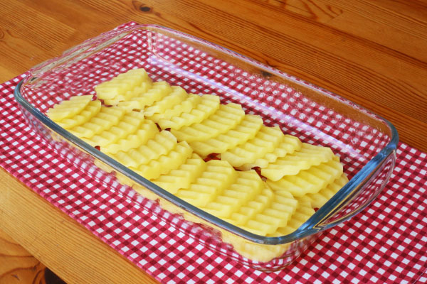
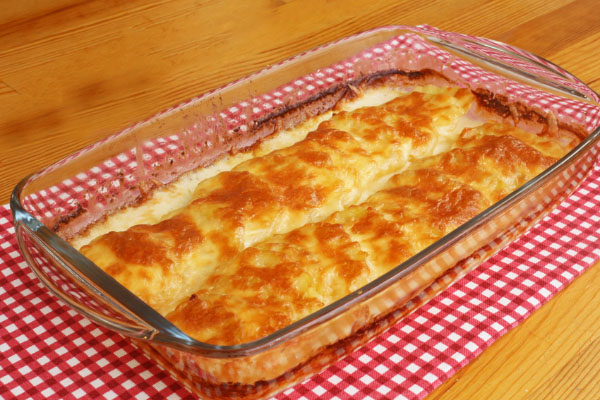

Kaç Kişilik:4 Hazırlanma Süresi:30 dakika Pişirme Süresi:45 dakika
Fırında Kremalı Patates Malzemeler.
- 3-4 adet patates
- 1 paket krema (200 ml)
- Yarım su bardağı süt
- Kaşar peyniri
- Tuz
Fırında Kremalı Patates Nasıl Yapılır?
- Patatesleri soyduktan sonra kalın olmayacak şekilde dilimleyin.
- Kullanacağınız kabı yağlayın ve patatesleri tuzladıktan sonra kaba dizin.
- Dizerken çok sıkışık olmamasına dikkat edin, eğimli olarak dizin.
- Üzerine sütü ve kremayı dökün.
- 160 derecede üzeri hafif kızarıncaya kadar pişirin.
- Daha sonra üzerine ince ince dilimlemiş olduğunuz kaşar peynirini ekleyin ve eriyinceye kadar tekrar fırında bekletin.
- Servis ederken karabiber ya da pul biber ekleyebilirsiniz.
Afiyet olsun.
- 
- 